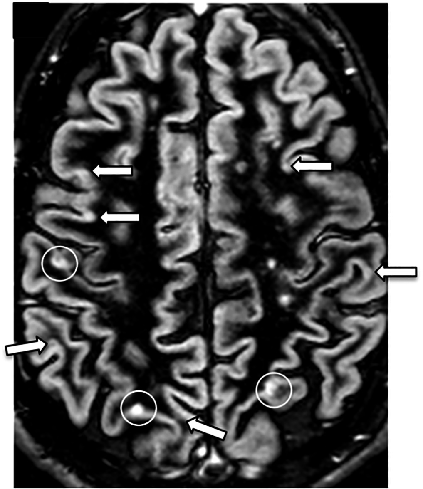

Le panel international de 2017 décrit la sclérose en plaques (SEP) par la dissémination des lésions dans le système nerveux central (SNC).mcdonald
Le texte exige une dissémination dans l'espace (DIS) et dans le temps (DIT), et il exige l'absence d'une meilleure explication.mcdonald
Ces critères s'appliquent d'abord à un syndrome clinique isolé (SCI) typique, et non à n'importe quelle image blanche.mcdonald
Le SCI est un épisode monophasique, avec des symptômes rapportés et des signes objectifs, d'une durée d'au moins 24 h.mcdonald
Cet épisode se développe de façon aiguë ou subaiguë, avec ou sans récupération, et en l'absence de fièvre ou d'infection.mcdonald
Le panel précise que le diagnostic reste celui d'un clinicien qui intègre l'histoire, l'examen, l'image et le laboratoire.mcdonald
La définition retenue ici est donc celle de ce panel, publiée dans Lancet Neurology en 2018, et non une formule locale.mcdonald
Une image isolée ne suffit pas, car le panel continue d'exiger une manifestation clinique pour poser le diagnostic.mcdonald
2. Épidémiologie en Suisse, puis en Europe
La Société suisse de la SEP retient 18 000 personnes atteintes en Suisse pour l'année 2021.sep
La dispersion de cette extrapolation va de 17 400 à 18 700, et le chiffre précis est supposé dans cette fourchette.sep
Ce compte exclut le syndrome clinique isolé et les personnes qui n'ont pas encore 18 ans.sep
Le rapport est de 2,7 femmes pour 1 homme, et la hausse la plus forte concerne les femmes de moins de 60 ans.sep
En 2016, la même méthode aboutissait à environ 15 000 personnes, puis le nombre a augmenté d'environ 20 %.sep
La société retient qu'environ un cinquième de la hausse vient de la croissance de la population, sans y réduire le reste.sep
La page de la société est datée du 27 janvier 2024, et elle s'appuie sur le Registre suisse de la SEP.sep
Le registre croise d'autres sources, dont l'achat de médicaments dans toute la Suisse, afin de tester la fiabilité du chiffre.sep
Des études européennes indiquent en majorité une hausse, avec une augmentation plus forte chez les femmes.sep
Le panel indique, pour la Suède, 10,2 cas de sclérose en plaques pour 100 000 personnes-année.mcdonald
Le syndrome radiologique isolé y est plus rare, à 0,8 cas pour 100 000 personnes-année dans la même phrase.mcdonald
Environ un tiers des personnes avec ce syndrome radiologique reçoivent le diagnostic dans les 5 ans.mcdonald
Le panel ajoute que deux tiers ne reçoivent pas ce diagnostic dans ces 5 ans, ce qui retient la prudence.mcdonald
Ces chiffres suédois ne décrivent pas la Suisse, donc on ne les additionne pas aux 18 000 personnes du registre.mcdonaldsep
La société suisse ne publie pas, sur la page lue, l'incidence annuelle, donc on ne l'invente pas à partir de la prévalence.sep
Le fardeau vient surtout du jeune âge adulte et de la durée de la maladie, ce que le registre suit pour planifier les soins.sep
La société rappelle que le chiffre de 2021 sert à planifier les soins et à voir des tendances, et non à classer un patient.sep
La méthode de 2021 est la même que celle de 2016, ce qui rend la comparaison des deux stocks possible.sep
Le panel décrit une prévalence augmentée du syndrome radiologique isolé chez les apparentés sains des patients.mcdonald
Le cours le plus souvent observé après ce syndrome est rémittent, et une forme progressive primaire reste possible.mcdonald
Les facteurs qui annoncent ce passage sont un âge plus jeune, une charge lésionnelle plus haute et une lésion infratentorielle ou médullaire asymptomatique.mcdonald
Une prise de contraste, des bandes oligoclonales et des potentiels évoqués visuels anormaux vont dans le même sens.mcdonald
La plus forte augmentation concerne les femmes de moins de 60 ans, et ce constat vient de la page suisse elle-même.sep
Le registre ne compte pas les enfants, ce qui explique l'exclusion des moins de 18 ans dans le stock de 18 000.sep
Mesure
Population
Année
Source
18 000 personnes
Suisse, hors SCI et hors moins de 18 ans
2021
Société suisse de la SEP
17 400 à 18 700
Fourchette de la même extrapolation
2021
Société suisse de la SEP
2,7 femmes pour 1 homme
Suisse
2021
Société suisse de la SEP
15 000 puis hausse d'environ 20 %
Comparaison avec 2016
2016 et 2021
Société suisse de la SEP
10,2 pour 100 000 personnes-année
Suède, sclérose en plaques
article du panel
Lancet Neurology
0,8 pour 100 000 personnes-année
Suède, syndrome radiologique isolé
même article
Lancet Neurology
3. Physiopathologie
Le panel décrit l'épisode comme un événement inflammatoire et démyélinisant, focal ou multifocal, dans le système nerveux central.mcdonald
La lésion doit être caractéristique, car une tache blanche non spécifique ne remplit pas la dissémination dans l'espace.mcdonald
Le panel retient quatre territoires : périventriculaire, cortical ou juxtacortical, infratentoriel, et moelle.mcdonald
Deux de ces quatre territoires suffisent pour l'espace, lorsqu'au moins une lésion en pondération T2 (T2) caractéristique siège dans chacun.mcdonald
Le temps se démontre par une lésion qui prend le contraste et une lésion qui ne le prend pas, au même moment.mcdonald
Une lésion T2 nouvelle, ou qui prend le contraste, sur un contrôle comparé à une image de référence, démontre aussi le temps.mcdonald
Les bandes oligoclonales propres au liquide cérébrospinal (LCR) peuvent remplacer le temps si l'espace est déjà démontré.mcdonald
Le panel retient au moins deux bandes, car cette démonstration qualitative est plus fiable qu'un index isolé.mcdonald
Une protéinorachie supérieure à 100 milligrammes par décilitre, ou plus de 50 cellules par millimètre cube, est atypique.mcdonald
Ces seuils sont hors information professionnelle suisse (AIPS), car ils décrivent le liquide et non une posologie.mcdonald
La coupe est axiale et la séquence est une double inversion recovery (DIR), ce qui fait ressortir le cortex et les foyers.plos
Des flèches blanches et des cercles sont déjà dessinés par les auteurs, donc on les lit avant d'ajouter quoi que ce soit.plos
On cherche d'abord les foyers brillants de la substance blanche, puis ceux qui touchent le cortex ou le bord cortical.plosmcdonald
Le panel compte la lésion corticale ou juxtacorticale pour la dissémination dans l'espace, ce que les cercles invitent à regarder.mcdonald
Cette image ne montre pas la moelle, donc une atteinte médullaire se cherche sur une autre séquence.plos
Aucun identifiant de patient n'est lisible, et la licence CC BY 4.0 autorise la copie avec attribution.plos
La consultation du fichier date du 15 novembre 2026, et l'article source est celui de Favaretto et collaborateurs en 2015.plos

Favaretto et collaborateurs, revue en accès libre, 2015, CC BY 4.0. Fichier consulté le 15 novembre 2026. Aucun repère ajouté.Fermer
4. Démarche diagnostique
Le panel met d'abord en garde contre une autre maladie qui imite les lésions, en particulier le spectre de la neuromyélite optique (NMOSD).mcdonald
Chez l'enfant, on ne pose pas le diagnostic au moment d'une encéphalomyélite aiguë disséminée (ADEM), car il faut une attaque ultérieure.mcdonald
Les critères sont surtout applicables à partir de 11 ans, et un âge plus jeune impose une prudence supplémentaire.mcdonald
Un liquide atypique, avec plus de 50 cellules ou une protéinorachie supérieure à 100 milligrammes par décilitre, oriente vers une autre cause.mcdonald
Ce seuil liquide est hors AIPS, et il sert à ne pas appeler sclérose en plaques une infection ou une autre inflammation.mcdonald
Après 50 ans, ou lorsqu'il existe un risque vasculaire, le panel conseille de chercher davantage de lésions périventriculaires.mcdonald
Le panel a conservé une seule lésion périventriculaire, car exiger trois lésions ajoutait une complexité qu'il n'a pas retenue.mcdonald
Le nerf optique, lors d'une névrite optique, ne compte pas pour les critères, faute de preuves suffisantes selon le panel.mcdonald
Le syndrome radiologique isolé ne reçoit pas le diagnostic tant qu'une manifestation clinique typique n'est pas survenue.mcdonald
La sclérose solitaire progressive ne remplit pas l'espace, donc le panel refuse le diagnostic malgré l'aggravation.mcdonald
Si une meilleure explication apparaît pendant le bilan, le diagnostic de sclérose en plaques est écarté.mcdonald
La ligne directrice de 2018 rappelle que le traitement de fond se prescrit dans un centre capable de surveiller et de traiter les effets indésirables.ectrims
Cette exigence de centre est un consensus du panel européen, et elle précède le choix de la molécule.ectrims
Le panel indique que les données lues ne montrent pas que les critères de 2010 soient inapplicables dans les pays qu'il a examinés.mcdonald
Les pays nommément cités dans ce passage sont l'Italie, les Pays-Bas, l'Espagne et la Russie, avec le Canada.mcdonald
La vigilance reste nécessaire pour écarter une neuromyélite, surtout chez l'enfant et lorsque la sclérose en plaques est moins fréquente.mcdonald
En Amérique latine, le panel rappelle aussi les infections et les carences nutritionnelles qui imitent la maladie.mcdonald
Cette mention ne donne aucune dose, et elle sert seulement à ne pas fermer le diagnostic trop vite.mcdonald
Le panel a discuté d'autoriser le diagnostic sur une image, des bandes et la dissémination, mais cette proposition n'a pas été retenue.mcdonald
Une preuve radiologique ancienne peut servir plus tard, une fois qu'un syndrome clinique isolé typique est survenu.mcdonald
Si une autre maladie explique mieux le tableau, le diagnostic devient celui de cette maladie, et la sclérose en plaques est écartée.mcdonald
Le risque de mauvais diagnostic est rappelé par le panel, surtout lorsque l'on ne dispose que d'une image.mcdonald
Situation
Ce qui tranche
Piège
Conduite
Névrite optique isolée
Le nerf optique ne compte pas pour l'espace
Compter la lésion du nerf optique
Chercher un autre territoire
Enfant au moment d'une ADEM
Il faut une attaque ultérieure typique
Poser le diagnostic le premier jour
Attendre l'épisode caractéristique
Plus de 50 cellules dans le liquide
Seuil atypique du panel
Conclure malgré le liquide
Chercher une autre inflammation
Syndrome radiologique sans symptôme
Le panel exige une manifestation clinique
Traiter une image seule comme une maladie certaine
Surveiller et ne pas poser le diagnostic
Plus de 50 ans ou risque vasculaire
Les taches périventriculaires sont moins spécifiques
Accepter une seule tache sans prudence
Exiger davantage de lésions périventriculaires
5. Anamnèse ciblée et drapeaux rouges
On fait dater l'épisode et l'on vérifie qu'il a duré au moins 24 h, car c'est le seuil du syndrome clinique isolé.mcdonald
On cherche une fièvre ou une infection contemporaine, puisque leur présence sort l'épisode de la définition.mcdonald
On demande les épisodes antérieurs, même résolus, car un second territoire clinique peut démontrer l'espace.mcdonald
On précise le territoire : œil, tronc cérébral, moelle ou hémisphère, afin de compter les sites cliniques.mcdonald
On demande l'âge, car avant 11 ans les critères s'appliquent avec une prudence que le panel souligne.mcdonald
On cherche des signes qui orientent vers une neuromyélite, car le panel demande d'écarter cette meilleure explication.mcdonald
On demande un projet de grossesse, car la ligne directrice de 2018 consacre une question entière à cette situation.ectrims
On note les traitements déjà reçus, afin de savoir si une activité sous interféron ou glatiramère doit faire changer de molécule.ectrims
On demande une aggravation sur plus d'un an sans poussée, car la forme progressive se décrit à part au moment du diagnostic.mcdonald
On cherche des facteurs vasculaires et un âge supérieur à 50 ans, ce qui rend une tache périventriculaire moins spécifique.mcdonald
On fait décrire la douleur oculaire et la baisse visuelle, sans compter pour autant la lésion du nerf optique dans la névrite.mcdonald
On demande les troubles sphinctériens et la marche, car ils pèsent sur l'urgence et sur le choix du lieu de prise en charge.ectrims
On demande les antécédents familiaux, car le panel note une prévalence plus haute du syndrome radiologique chez les apparentés.mcdonald
On cherche une récupération incomplète, car elle ne change pas la définition pourvu que l'épisode ait duré au moins 24 h.mcdonald
On fait préciser si plusieurs territoires ont été touchés dans le même épisode, car le SCI peut être multifocal.mcdonald
On demande les vaccins vivants seulement au moment de la corticothérapie immunosuppressive, car Solu-Medrol les contre-indique dans ce cas.aips-35112
On demande si l'épisode a récupéré ou non, car la définition accepte les deux évolutions pourvu que la durée atteigne 24 h.mcdonald
On cherche une plainte multifocale dès le premier jour, car plusieurs lieux cliniques peuvent remplir l'espace d'emblée.mcdonald
Question
Pourquoi
Si la réponse inquiète
L'épisode a-t-il duré au moins 24 h ?
Seuil du syndrome clinique isolé
Ne pas appeler SCI un symptôme de quelques minutes
Y avait-il de la fièvre ?
La définition exclut fièvre et infection
Chercher une cause infectieuse
Y a-t-il eu un épisode dans un autre territoire ?
Un second site clinique démontre l'espace
Le compter avant de redemander une image
Un projet de grossesse existe-t-il ?
La ligne directrice de 2018 traite cette situation
Lire la fiche de la molécule avant de poursuivre
L'âge dépasse-t-il 50 ans ?
Les lésions périventriculaires sont moins spécifiques
Chercher davantage de lésions avant de conclure
6. Examen physique ciblé, région par région
L'examen suit l'ordre des territoires du panel, et il commence par les yeux.mcdonald
Le premier syndrome est la névrite optique, avec baisse visuelle et douleur, mais sa lésion ne compte pas seule pour l'espace.mcdonald
Le deuxième syndrome est infratentoriel, lorsque la diplopie, le vertige durable ou l'incoordination occupent le tronc ou le cervelet.mcdonald
Le troisième syndrome est médullaire, avec un niveau sensitif, un signe pyramidal ou un trouble de marche d'installation subaiguë.mcdonald
Le quatrième syndrome est supratentoriel, lorsque l'hémisphère explique un déficit latéralisé qui dure au moins 24 h.mcdonald
Le cinquième syndrome est progressif d'emblée, et le panel demande alors la même rigueur que pour la forme rémittente, avec les ajustements de 2017.mcdonald
Dans la forme progressive, la distinction entre lésion symptomatique et asymptomatique a été retirée, et la lésion corticale compte.mcdonald
Chaque syndrome se relie à un territoire de la dissémination dans l'espace, ce qui évite de multiplier des étiquettes sans lieu.mcdonald
Un patient peut cumuler deux syndromes dans le temps, et c'est précisément cette accumulation que le critère de temps reconnaît.mcdonald
Le syndrome clinique isolé monofocal n'occupe qu'un lieu, et il a donc besoin d'un second territoire, clinique ou visible, pour l'espace.mcdonald
Le syndrome multifocal occupe déjà plusieurs lieux, ce qui peut remplir l'espace dès le premier épisode si les signes sont objectifs.mcdonald
La forme possible reste un diagnostic d'attente, et elle ne se traite pas comme une maladie déjà certaine dans le texte du panel.mcdonald
On réévalue le phénotype, actif ou non, progressif ou non, car le panel demande cette mise à jour avec le temps.mcdonald
La névrite optique reste un épisode clinique valide, même si sa lésion d'imagerie ne remplit pas l'espace.mcdonald
La myélite et l'atteinte infratentorielle comptent chacune comme un territoire, et leur réunion remplit l'espace.mcdonald
8. Diagnostic positif et critères
Le diagnostic positif exige la dissémination dans l'espace, la dissémination dans le temps, et l'absence d'une meilleure explication.mcdonald
L'espace par l'image exige une lésion T2 caractéristique dans au moins deux des quatre territoires.mcdonald
Le temps par l'image demande, soit une lésion qui prend le contraste et une qui ne le prend pas, soit une lésion nouvelle au contrôle.mcdonald
Les bandes oligoclonales propres au liquide remplacent le temps lorsqu'un syndrome clinique isolé typique a déjà l'espace.mcdonald
Il en faut au moins deux, et le sérum doit être comparé, afin de prouver qu'elles sont propres au liquide.mcdonald
Les lésions symptomatiques comptent pour l'espace et pour le temps, ce qui change la règle de 2010.mcdonald
Les lésions corticales comptent au même titre que les lésions juxtacorticales, autre changement par rapport à 2010.mcdonald
La lésion du nerf optique, dans une névrite optique, reste l'exception et ne remplit pas le critère.mcdonald
Si les critères sont remplis, on précise d'emblée le cours : rémittent, progressif primaire ou progressif secondaire.mcdonald
On dit aussi si le cours est actif et s'il est progressif, d'après l'année écoulée, puis on réévalue ce phénotype.mcdonald
Si le syndrome clinique isolé ne remplit pas encore tout, le panel parle de sclérose en plaques possible, et non de maladie certaine.mcdonald
Le liquide n'est pas obligatoire lorsque l'image démontre déjà l'espace et le temps dans un tableau typique, sans trait atypique.mcdonald
Le seuil pour faire le liquide reste bas dès que l'on envisage un traitement de fond ou que le tableau sort du SCI typique.mcdonald
La ligne directrice de 2018 ne refait pas ces critères, car elle part d'un diagnostic déjà posé pour choisir le traitement.ectrims
Deux attaques cliniques dans deux territoires différents démontrent l'espace et le temps sans obliger une image, si aucune meilleure explication n'existe.mcdonald
Une seule attaque avec au moins deux territoires cliniques exige encore le temps, par une nouvelle attaque, par l'image, ou par les bandes.mcdonald
Une seule attaque et un seul territoire exigent les deux démonstrations, l'espace puis le temps.mcdonald
Le panel de 2017 maintient les critères de la forme progressive primaire alignés sur ceux de 2010, avec les deux ajustements déjà dits.mcdonald
On ne compte pas une lésion non caractéristique, même si elle est brillante, car le texte exige des lésions évocatrices.mcdonald
Le phénotype se réévalue, car une forme rémittente peut devenir progressive secondaire avec les années.mcdonald
On écrit si la maladie est active sur l'année écoulée, car le panel demande cette mention au moment du diagnostic.mcdonald
Critère
Ce qui suffit
Ce qui ne suffit pas
Espace
Deux territoires parmi les quatre, avec lésion T2 caractéristique
Une seule région, ou une tache non caractéristique
Temps
Contraste et non-contraste simultanés, ou lésion nouvelle au contrôle
Une image unique sans bande oligoclonale ni second épisode
Bandes
Au moins deux bandes propres au liquide, sérum comparé
Un index isolé si les bandes sont absentes
Nerf optique dans la névrite
Le symptôme clinique compte comme épisode
La lésion du nerf optique ne remplit pas l'espace
Image sans symptôme
Elle peut servir plus tard, après un SCI typique
Elle ne pose pas le diagnostic à elle seule
9. Examens complémentaires
L'examen qui démontre l'espace et le temps est l'imagerie par résonance magnétique (IRM), et non un dosage sanguin.mcdonald
En première intention, on demande une IRM cérébrale, et l'on ajoute la moelle lorsque le tableau est médullaire ou incomplet.mcdonald
Le panel abaisse peu le seuil de l'IRM médullaire ou du liquide lorsque l'on s'apprête à commencer un traitement de fond.mcdonald
Le liquide se fait aussi si le cours est progressif d'emblée, si des traits sont atypiques, ou si la maladie est moins probable.mcdonald
Les groupes cités sont les enfants, les personnes âgées et les populations où la sclérose en plaques est moins fréquente.mcdonald
Une protéinorachie supérieure à 100 milligrammes par décilitre, hors AIPS, fait chercher une autre maladie.mcdonald
Plus de 50 cellules par millimètre cube, ou la présence de polynucléaires, va dans le même sens atypique.mcdonald
Le panel ne fixe pas, dans le texte lu, la conduite du gadolinium pendant la grossesse, donc on la cherche sur la fiche du produit de contraste.mcdonald
Si l'IRM est impossible, le diagnostic peut encore reposer sur deux poussées dans deux territoires, car la clinique suffit alors à l'espace et au temps.mcdonald
Le contrôle d'imagerie, sous traitement, se place en général dans les 6 mois, puis on le compare à une image vers 12 mois.ectrims
La ligne directrice précise que l'on peut décaler ces deux délais selon la molécule et la situation du patient.ectrims
La lésion T2 nouvelle ou qui s'agrandit sans équivoque est la mesure préférée, complétée par la prise de contraste.ectrims
La figure DIR illustre des foyers cérébraux, et elle ne remplace pas la moelle.plos
La comparaison du liquide et du sérum est indispensable pour affirmer que les bandes sont propres au liquide.mcdonald
Un résultat positif d'un autre test de synthèse intrathécale se lit avec prudence si les bandes sont négatives.mcdonald
Lorsque l'image cérébrale est normale ou ne remplit pas l'espace, le panel place le seuil bas pour l'IRM médullaire et le liquide.mcdonald
La ligne directrice demande de combiner l'image et les mesures cliniques pour juger l'évolution sous traitement.ectrims
L'image de référence et l'image de contrôle doivent être comparables, car sinon une lésion nouvelle ne s'affirme pas.ectrims
Lorsque le contraste et une lésion qui ne le prend pas coexistent, le temps est démontré sans attendre un second cliché.mcdonald
Si ce couple manque, les bandes oligoclonales peuvent tenir lieu de temps dans un syndrome clinique isolé typique qui a déjà l'espace.mcdonald
L'IRM médullaire se demande tôt si l'image cérébrale ne suffit pas, car le panel place alors le seuil bas.mcdonald
Si une meilleure explication est probable, notamment une neuromyélite, on ne pose pas le diagnostic et l'on cherche l'anticorps adapté.mcdonald
Si l'épisode dure moins de 24 h ou survient avec une fièvre, on ne l'appelle pas syndrome clinique isolé.mcdonald
Si un seul territoire est clinique et que l'image n'en montre pas un second, l'espace n'est pas acquis.mcdonald
Si l'espace est acquis et que des bandes oligoclonales propres au liquide sont présentes, le temps peut être retenu sans nouvelle lésion.mcdonald
Si l'espace et le temps sont acquis dans un tableau typique, on peut commencer à discuter le traitement de fond.mcdonaldectrims
Si le patient a un syndrome clinique isolé évocateur qui ne remplit pas encore la maladie, la recommandation forte de 2018 propose l'interféron ou le glatiramère.ectrims
Si la maladie rémittente est active, par poussées ou par lésions nouvelles, la recommandation forte est de traiter tôt.ectrims
Si une activité apparaît sous interféron ou glatiramère, il faut proposer une molécule plus efficace.ectrims
Si l'on arrête le natalizumab, il faut envisager une reprise d'activité, voire un rebond, avant de laisser le patient sans relais.ectrims
Si une poussée aiguë est en cours, Solu-Medrol peut être utilisé de 500 mg à 1 000 mg par jour pendant 3 à 5 jours.aips-35112
Cette perfusion dure 30 minutes, le matin si l'on veut limiter les troubles du sommeil, et elle ne change pas le taux de rechute ultérieur.aips-35112
Si l'enfant présente une encéphalomyélite aiguë disséminée, on attend une attaque ultérieure caractéristique avant d'appliquer les critères.mcdonald
Si le patient a moins de 11 ans en dehors de cette situation, on applique les critères avec la prudence que le panel demande.mcdonald
Si le liquide contient plus de 50 cellules, on suspend la conclusion et l'on cherche une autre inflammation.mcdonald
Si le patient est stable et tolère le traitement, la recommandation de 2018 permet d'envisager de le poursuivre.ectrims
Si l'on arrête une molécule très efficace, on envisage d'en commencer une autre, en tenant compte de l'activité antérieure et du risque de rebond.ectrims
Si deux attaques ont touché deux territoires, l'espace et le temps sont cliniques, et l'image n'est plus obligatoire pour le critère.mcdonald
Si l'image montre déjà l'espace et le temps dans un tableau typique, le liquide reste utile mais n'est pas exigé par le panel.mcdonald
11. Prise en charge
11.A But
Le but de la poussée est de raccourcir sa durée, car Solu-Medrol le peut, sans modifier la progression du handicap.aips-35112
Le but du traitement de fond est de réduire les poussées et l'activité visible à l'image chez un patient actif.ectrims
La recommandation forte de 2018 dit qu'il faut offrir ce traitement tôt dans la forme rémittente active.ectrims
Solu-Medrol, information professionnelle suisse (AIPS) numéro 35112, permet 500 mg par jour à 1 000 mg par jour.aips-35112
Cette posologie dure 3 à 5 jours, en perfusion de 30 minutes, dans la poussée aiguë de sclérose en plaques.aips-35112
Le texte précise que le produit peut réduire la durée des poussées, mais qu'il n'influence pas le taux de rechute ni la progression.aips-35112
La surveillance immédiate comprend la protection gastrique, la prophylaxie de la thrombose, la pression artérielle, la glycémie et les électrolytes.aips-35112
On donne la perfusion le matin lorsque l'on veut réduire le risque de trouble du sommeil.aips-35112
Rebif, numéro 54810, a pour dose cible 44 µg trois fois par semaine, après une montée progressive.aips-54810
La montée retient 8,8 µg, puis 22 µg, puis 44 µg, afin de réduire les effets indésirables.aips-54810
Tout traitement par Rebif doit être instauré sous la surveillance d'un médecin spécialisé dans la sclérose en plaques.aips-54810
La dépression grave et les idées suicidaires contre-indiquent Rebif, au même titre que l'hypersensibilité à l'interféron bêta.aips-54810
Pour un syndrome clinique isolé qui ne remplit pas encore les critères, la recommandation forte propose l'interféron ou l'acétate de glatiramère.ectrims
Le choix parmi les molécules disponibles dépend du patient, de l'activité, de la sécurité et de l'accès, en discussion avec lui.ectrims
Cette leçon ne détaille la dose que pour Solu-Medrol et Rebif, car ce sont les informations professionnelles lues ici.aips-35112aips-54810
La ligne directrice de 2018 dit que les traitements de fond ne sont pas autorisés pendant la grossesse, hors AIPS.ectrims
La seule exception nommée est l'acétate de glatiramère à 20 mg par millilitre, et cette concentration reste hors AIPS.ectrims
L'information de Rebif, mise à jour en mars 2024, permet l'usage pendant la grossesse en cas de nécessité clinique, ce qui diverge de ce texte de 2018.aips-54810ectrims
On suit donc l'information professionnelle la plus récente pour Rebif, et l'on explique au patient cette divergence.aips-54810
Si le risque de réactivation est élevé, la recommandation de 2018 permet d'envisager l'interféron ou le glatiramère jusqu'à la confirmation de la grossesse.ectrims
Dans quelques situations très actives, poursuivre ce traitement pendant la grossesse peut aussi se discuter.ectrims
Si l'activité reste haute, il est en général conseillé de différer la grossesse, et le natalizumab pendant la grossesse ne se discute qu'après une explication complète.ectrims
L'alemtuzumab, dans un projet de grossesse très actif, exige un intervalle de 4 mois entre la dernière perfusion et la conception.ectrims
Rebif maintient le schéma habituel chez l'adulte, et l'initiation reste réservée au médecin spécialisé.aips-54810
11.C Surveillance
Pendant les 3 à 5 jours de Solu-Medrol, on surveille la pression, la glycémie et les électrolytes, car le texte l'exige.aips-35112
On associe la protection gastrique et la prophylaxie de la thrombose pendant cette courte cure.aips-35112
Sous traitement de fond, une IRM de référence se fait en général dans les 6 mois, et une seconde vers 12 mois.ectrims
On y compte les lésions T2 nouvelles ou qui s'agrandissent, et l'on complète par les lésions qui prennent le contraste.ectrims
Une activité clinique ou radiologique sous interféron ou glatiramère doit faire proposer une molécule plus efficace.ectrims
On surveille aussi l'humeur sous Rebif, car la dépression grave et les idées suicidaires imposent l'arrêt de cette molécule.aips-54810
Si le patient est stable sur le plan clinique et à l'image, et qu'il tolère le traitement, on envisage de le poursuivre.ectrims
11.D Pronostic
Solu-Medrol ne change pas le taux de rechute ni la progression du handicap, donc il ne sert pas de pronostic à long terme.aips-35112
Le syndrome radiologique isolé évolue vers un diagnostic dans les 5 ans chez environ un tiers des personnes, surtout sur un mode rémittent.mcdonald
Deux tiers ne reçoivent pas ce diagnostic dans le même délai, ce qui justifie de ne pas traiter une image comme une maladie certaine.mcdonald
On ne promet pas l'absence de nouvelle poussée sous traitement de fond, car la recommandation parle de réduction et non de guérison.ectrims
La sortie de la cure de poussée se fait après les 3 à 5 jours, une fois la pression, la glycémie et les électrolytes revus.aips-35112
La sortie du suivi rapproché du traitement de fond attend l'image de contrôle et l'absence d'effet indésirable grave.ectrims
Le texte général limite une forte dose parentérale à 48 à 72 heures, alors que le paragraphe de la poussée décrit 3 à 5 jours.aips-35112
L'indication de poussée, elle, décrit 3 à 5 jours, et c'est ce calendrier que l'on suit lorsque le diagnostic est la sclérose en plaques.aips-35112
On ne mélange pas ce calendrier de poussée avec la dose initiale de 10 à 500 mg citée pour d'autres maladies dans la même information.aips-35112
Les données de registres portent sur plus de 1 000 grossesses exposées à l'interféron bêta, surtout au premier trimestre.aips-54810
Ces données semblent indiquer une incidence de malformations comparable au risque de base de la population générale.aips-54810
Les données des deuxième et troisième trimestres restent très limitées, ce que la fiche dit explicitement.aips-54810
Chez l'animal, un risque éventuellement accru d'avortement spontané est décrit, sans que les données humaines disponibles indiquent un risque accru.aips-54810
Rebif peut être utilisé pendant l'allaitement, et les quantités excrétées dans le lait sont jugées négligeables dans la fiche.aips-54810
Aucun effet toxique n'a été signalé chez les nourrissons allaités dans les données disponibles, qui restent limitées.aips-54810
La première semaine et la deuxième se font à 8,8 µg, soit 20 % de la dose de 44 µg, trois fois par semaine.aips-54810
La troisième semaine et la quatrième passent à 22 µg, soit 50 % de la dose cible.aips-54810
Dès la cinquième semaine, la dose entière de 44 µg est atteinte, toujours trois fois par semaine.aips-54810
Un syndrome pseudo-grippal fait partie des effets que le médecin doit annoncer, car la fiche le place parmi les plus fréquents.aips-54810
Le glatiramère, dans l'essai cité par la ligne directrice, a porté sur 481 patients et a retardé la conversion avec un hazard ratio de 0,55.ectrims
L'intervalle de confiance à 95 % de ce ratio va de 0,40 à 0,76, et les arrêts pour effet indésirable avaient un risque relatif de 3,43.ectrims
Ces chiffres décrivent un essai et non une dose suisse, donc la prescription reste celle de l'information professionnelle.ectrims
La ligne directrice a retenu 21 recommandations après trois tours, à partir de 10 questions.ectrims
Elle couvre les molécules autorisées par l'Agence européenne des médicaments (EMA) au moment de la publication, et non les molécules encore en essai.ectrims
Le centre qui prescrit doit assurer une surveillance correcte, une évaluation complète et la capacité de traiter vite un effet indésirable.ectrims
Ce triptyque est un consensus de 2018, et il s'applique à toute la gamme des traitements de fond.ectrims
Le stylo de 8,8 µg porte un bouton jaune, et celui de 22 µg un bouton vert, ce qui aide à ne pas confondre les paliers.aips-54810
Le volume correspondant à 8,8 µg est de 0,1 ml, et celui de 22 µg est de 0,25 ml lorsque l'on utilise la seringue de 44 µg.aips-54810
La dose de 44 µg correspond au volume entier de la seringue ou du stylo prévu pour cette dose, trois fois par semaine.aips-54810
On annonce le syndrome pseudo-grippal avant la première injection, car la fiche le range parmi les effets les plus fréquents.aips-54810
Les vaccins vivants sont contre-indiqués sous des doses immunosuppressives de corticoïde, ce que Solu-Medrol écrit explicitement.aips-35112
L'administration intrathécale ou épidurale de Solu-Medrol est contre-indiquée, et la poussée se traite par voie intraveineuse.aips-35112
500 mg par jour à 1 000 mg par jour, sur 30 minutes, pendant 3 à 5 jours.aips-35112
Ce que le produit ne fait pas
Il peut réduire la durée des poussées, mais il n'influence pas le taux de rechute ni la progression de l'incapacité.aips-35112
Surveillance
Protection gastrique, prophylaxie de la thrombose, pression artérielle, glycémie et électrolytes sériques.aips-35112
Contre-indications
« Mycoses systémiques · Administration intrathécale ou épidurale · Administration intramusculaire dans le purpura thrombopénique idiopathique · Hypersensibilité à la méthylprednisolone ou un autre des composants du médicament L'administration de vaccins vivants ou de vaccins vivants atténués est contre-indiquée chez les personnes qui reçoivent des doses immunosuppressives de corticostéroïdes. »aips-35112
Grossesse
« Les corticostéroïdes tels que la méthylprednisolone ne doivent être utilisés pendant la grossesse qu'au terme d'une évaluation rigoureuse des risques et des bénéfices. »aips-35112
Allaitement
« il ne faut pas allaiter en cas d'utilisation de Solu-Medrol. »aips-35112
44 µg trois fois par semaine, après montée par 8,8 µg puis 22 µg.aips-54810
Qui prescrit
Le traitement doit être instauré sous la surveillance d'un médecin spécialisé dans la sclérose en plaques.aips-54810
Contre-indications
« Patients présentant des dépressions graves et/ou idées suicidaires (voir Mises en garde et précautions et Effets indésirables ). »aips-54810
Grossesse
« Selon des études menées chez l'animal, il existe un risque éventuellement accru d'avortements spontanés. » « Rebif peut être utilisé pendant la grossesse en cas de nécessité clinique. »aips-54810
Allaitement
« Rebif peut être utilisé pendant l'allaitement. »aips-54810
Dès la poussée déficitaire, on confirme qu'il ne s'agit pas d'une infection fébrile, car la fièvre sort l'épisode de la définition du panel.mcdonald
On prélève, si le diagnostic n'est pas déjà certain, ce qui manque pour l'espace et le temps, sans retarder la méthylprednisolone lorsque la poussée est déjà caractérisée.aips-35112mcdonald
On vérifie les contre-indications de Solu-Medrol, en particulier une mycose systémique, avant la première perfusion.aips-35112
La perfusion apporte 500 mg à 1 000 mg et dure 30 minutes, de préférence le matin.aips-35112
On surveille le même jour la pression artérielle, la glycémie et les électrolytes, et l'on assure la protection gastrique.aips-35112
On prévient que la durée de la poussée peut diminuer, sans que le taux de rechute ni la progression en soient changés.aips-35112
La cure tient 3 à 5 jours, puis le traitement de fond se discute à part, selon l'activité et non selon cette cure.aips-35112ectrims
Si une dépression grave est connue et que le fond envisagé est Rebif, cette molécule est contre-indiquée.aips-54810
La page suisse ne fixe pas un geste de prévention primaire chiffré, donc le registre ne devient pas un seuil d'action.sep
La prévention secondaire est le traitement précoce de la forme active, car la recommandation forte de 2018 le demande.ectrims
Proposer l'interféron ou le glatiramère à un syndrome clinique isolé évocateur vise à retarder la conversion, selon la même ligne.ectrims
La prévention tertiaire est le changement de molécule dès qu'une activité apparaît sous le premier traitement.ectrims
Arrêter un traitement très actif sans relais peut laisser revenir la maladie, en particulier après le natalizumab.ectrims
On informe les femmes en âge de procréer avant la conception, car la grossesse change le cadre des autorisations.ectrimsaips-54810
Le registre suisse permet de suivre le nombre de personnes et les soins, et non de fixer une dose.sep
On ne dose pas la vitamine D dans cette leçon, car ni le panel diagnostique ni la ligne de 2018 ne donnent ici une posologie lue.mcdonaldectrims
Offrir le traitement tôt dans la forme active est la prévention des lésions supplémentaires que la recommandation forte décrit.ectrims
Continuer un traitement bien toléré chez un patient stable évite une reprise, et la recommandation de 2018 le permet.ectrims
Le centre qui prescrit doit pouvoir détecter les effets indésirables et y répondre, car c'est une condition du consensus.ectrims
On explique le rebond possible du natalizumab avant tout arrêt, afin que le patient ne découvre pas ce risque après coup.ectrims
Détecter un effet indésirable et pouvoir y répondre fait partie des conditions du centre, selon le consensus de 2018.ectrims
Une patiente stable peut poursuivre le traitement, car la recommandation le permet lorsque la tolérance est bonne.ectrims
Le projet de grossesse se discute avant l'arrêt brutal, afin de ne pas découvrir un rebond au mauvais moment.ectrims
13. Points clés
On ne pose pas le diagnostic sans manifestation clinique, même si l'image montre des taches évocatrices.mcdonald
L'espace exige deux territoires parmi quatre, et le temps exige une lésion nouvelle, un contraste mixte, ou des bandes oligoclonales.mcdonald
La lésion du nerf optique ne compte pas dans une névrite optique, malgré la force du symptôme.mcdonald
La poussée se traite par 500 mg à 1 000 mg de Solu-Medrol par jour pendant 3 à 5 jours, sans effet sur la progression.aips-35112
La forme rémittente active doit recevoir un traitement de fond tôt, et l'activité sous interféron ou glatiramère fait changer de molécule.ectrims
Rebif se monte jusqu'à 44 µg trois fois par semaine, et sa fiche de 2024 permet la grossesse seulement en cas de nécessité clinique.aips-54810
Avant 11 ans, et au moment d'une encéphalomyélite aiguë disséminée, les critères ne se posent pas le premier jour.mcdonald
Plus de 50 cellules dans le liquide, ou une protéinorachie supérieure à 100 milligrammes par décilitre, hors AIPS, fait reprendre le diagnostic.mcdonald
Le centre, la molécule et la surveillance forment un seul paquet, et l'on ne prescrit pas le fond hors d'un lieu capable de suivre.ectrims
14. Pièges et questions
Pourquoi doit on refuser le diagnostic devant une image évocatrice sans aucun symptôme ?
Parce que le panel exige encore une manifestation clinique, et environ deux tiers des syndromes radiologiques isolés ne deviennent pas une maladie en 5 ans.mcdonald
Combien de territoires faut il pour la dissémination dans l'espace, et lesquels comptent ?
Il en faut deux parmi quatre : périventriculaire, cortical ou juxtacortical, infratentoriel, et moelle.mcdonald
Les bandes oligoclonales remplacent elles le temps, et à quelle condition ?
Oui, s'il existe déjà un syndrome clinique isolé typique avec l'espace, et au moins deux bandes propres au liquide.mcdonald
Pourquoi la lésion du nerf optique ne compte elle pas lors d'une névrite optique ?
Parce que le panel juge les preuves insuffisantes, et il maintient cette exception par rapport aux autres lésions symptomatiques.mcdonald
Quelle dose de Solu-Medrol le texte suisse retient il pour une poussée, et que ne fait il pas ?
Il retient 500 mg à 1 000 mg par jour pendant 3 à 5 jours, et il ne change ni le taux de rechute ni la progression.aips-35112
Que propose la recommandation forte de 2018 si le syndrome clinique isolé ne remplit pas encore les critères ?ectrims
Elle propose l'interféron ou l'acétate de glatiramère lorsque l'image est anormale et évocatrice.ectrims
Pourquoi la fiche de Rebif de 2024 ne recopie elle pas l'interdiction de grossesse de la ligne de 2018 ?aips-54810ectrims
Parce que Rebif peut être utilisé pendant la grossesse en cas de nécessité clinique, ce qui diverge du texte européen plus ancien.aips-54810ectrims
Quand fait on l'image de contrôle sous traitement de fond, et que mesure on ?
En général dans les 6 mois puis vers 12 mois, et l'on mesure les lésions T2 nouvelles ou qui s'agrandissent, plus le contraste.ectrims
Un enfant au moment d'une encéphalomyélite aiguë disséminée, avant 11 ans, reçoit il le diagnostic le jour même ?mcdonald
Non, car le panel interdit d'appliquer les critères à ce moment, et il demande une attaque ultérieure caractéristique.mcdonald
Quel risque doit on expliquer si l'on arrête le natalizumab sans relais ?
La ligne directrice demande d'envisager une reprise d'activité, voire un rebond, avant de laisser le patient sans traitement.ectrims
Pourquoi les critères de 2010 et ceux de 2017 ne traitent ils pas la lésion symptomatique de la même façon ?mcdonald
Parce que le panel de 2017 permet de compter la lésion symptomatique pour l'espace et pour le temps, ce que 2010 excluait dans le tronc et la moelle.mcdonald
Quel intervalle de 4 mois exige la ligne directrice entre la dernière perfusion d'alemtuzumab et la conception ?ectrims
La ligne directrice exige cet intervalle entre la dernière perfusion et la conception dans les situations très actives où cette option se discute.ectrims
Le bouton jaune et le bouton vert de Rebif servent ils à quelque chose pendant la montée de dose ?
Oui, car le bouton jaune correspond à 8,8 µg et le bouton vert à 22 µg, ce qui sépare les deux premiers paliers.aips-54810
Sources
Société suisse de la sclérose en plaques. 18 000 personnes atteintes de SEP en Suisse. Page datée du 27 janvier 2024. https://www.multiplesklerose.ch/fr/actualite/detail/nouvelle-extrapolation-18000-personnes-atteintes-de-sep-en-suisse/ (consulté le 15 novembre 2026).
Thompson AJ, Banwell BL, Barkhof F, et al. Diagnosis of multiple sclerosis: 2017 revisions of the McDonald criteria. Lancet Neurology. 2018;17:162-173. DOI 10.1016/S1474-4422(17)30470-2. Texte lu le 15 novembre 2026.
Montalban X, Gold R, Thompson AJ, et al. ECTRIMS/EAN guideline on the pharmacological treatment of people with multiple sclerosis. Multiple Sclerosis Journal. 2018. https://journals.sagepub.com/doi/10.1177/1352458517751049 (consulté le 15 novembre 2026).
Solu-Medrol, méthylprednisolone, Swissmedic 35112, information professionnelle, mise à jour Août 2025. https://files.refdata.ch/simis-public-prod/MedicinalDocuments/24c65936933542e2807ebdd8b2524e62-fr.html
Rebif, interféron bêta-1a, Swissmedic 54810, information professionnelle, mise à jour Mars 2024. https://files.refdata.ch/simis-public-prod/MedicinalDocuments/2375e7a5018f475b96c3ba056f0aac30-fr.html
Favaretto A, Poggiali D, Lazzarotto A, Rolma G, Causin F, Gallo P. PLOS ONE. 2015;10(5):e0127805. Axial DIR MRI. Licence CC BY 4.0. https://commons.wikimedia.org/wiki/File:Axial_DIR_MRI_of_a_brain_with_multiple_sclerosis_lesions.jpg (consulté le 15 novembre 2026).
Le contenu reprend les sources citées et n'a pas été validé cliniquement par un médecin.